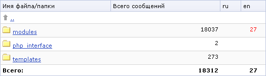

На странице Перевод языковых файлов (Настройка > Локализация) отображается структура каталогов, содержащих языковые файлы, в порядке расположения на диске. Для навигации по структуре каталогов можно пользоваться:
| Кнопка | Описание |
|---|---|
| Путь | Поле служит для быстрого перехода к указанному в нем разделу с помощью кнопки Перейти. |
| Показать различия/ Не показывать различия | Переключение между режимами отображения количества языковых файлов.Данная кнопка отображается, если в настройках модуля снята опция Автоматически считать разницу в языковых файлах. |
| Экспорт в CSV | Экспорт языковых файлов раздела в формате CSV. |
Для каждой папки и файла выводится статистика переведенных и непереведенных языковых фраз. Количество непереведенных фраз для соответствующего языка отображается красным цветом, например:

Нажатие на ссылку на языковом файле приведет к открытию страницы для редактирования языкового файла.
| Поле | Описание |
|---|---|
| Файл CSV | С помощью кнопки Обзор... укажите путь к файлу, из которого будет осуществляться импорт данных. |
| Обработка файлов | Выберите способ обработки языковых файлов:
|
| Кнопка Импортировать | Служит для проведения импорта языковых файлов. |
| © «Битрикс», 2001-2008, «1C-Битрикс», 2008 | 1С-Битрикс: Управление сайтом |